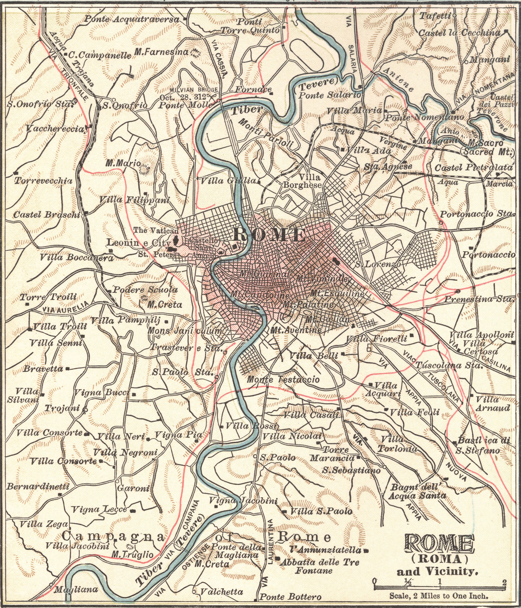

The Eternal City To Travel To Once In your Lifetime
1)Why is Rome called the eternal city?
This has been a standard question asked by many tourists. Rome has been labelled as the ‘Eternal City’ for many centuries, dating back to the Roman era, presuming even Julius Caesar himself. Although this moniker was first applied in the 1st century BC to commemorate the existence of Rome for the last five centuries, this title is also used for many other purposes since the classic Romanticism and Renaissance periods.
Rome, the eternal city in Italian is labelled as ‘La Città Eterna’. This notion of eternity can be experienced through any activity you might want to indulge in while in this Italian capital. Whether you are fawning over the frescos in the St. Peter’s Basilica, or marvelling at the beauty of the Castel Sant’Angelo, or just exploring the city while on a romantic date with your better half, the experience is eternal.
Also known as a city mad for football, Rome has eternally stood for football clubs such as Lazio and Roma. Also notable is the fact that most of the players in the ‘Azurri’ – the Italian football team, trace their origins to this Italian capital.
2)Interesting facts about Rome
For travellers planning a Rome travel – the eternal city in future, knowing a bit of background information about the historic city is a must. This background information also consists of some quirks that make Rome the city that it is. Here are few of the interesting facts about the city that you might want to check out.
- Rome, like other cities of the oldest civilizations of the world, has derived its name from the mythological legends. Legends have it that a she-wolf discovered two kids on the banks of the river Tiber. Growing up with the she-wolf, the two brothers, named Remus and Romulus, united the local tribes to find a new city beside the banks of the river. However, in a fight between them, Remus was killed by Romulus. Proving the adage of ‘the victor takes the spoils’ to be true even in those times, Romulus named the city Rome, thus cementing his place in history.
- Rome has been ransacked and rebuilt innumerable times during civilization. So much so that layer upon layer on ancient ruins has been discovered by archaeologists and excavators. This hypothesis is further supported by the altitude at which the Colosseum is located, which at an average is 4 meters below the mean sea level at which modern Rome is located.
- The ancient Roman empire, along with some of its famous landmarks, have given the English language some of its most famous words. The term ‘capitol’ – corrupted to ‘capital’ – has been derived from the Capitoline Hill located in the vicinity of the ancient Roman seat of power. Additionally, the term ‘palace’ has been derived from the Palatine Hill. Whenever you go to Rome, the eternal city next time, be sure to check the Capitoline and Palatine Hills. These two hills are still rumoured to house the first ever capital and palace respectively, being known as the seat of power of the first Roman empire, thus giving answers to why is Rome called the eternal city.
- Modern Rome boasts of quite a robust culture of decorating the walls and parapets of the city with graffiti. In case you consider this an act of rudeness and damage to public property, then you might want to reconsider this line of thinking, as it is considered one of the Rome points of interest. This art has been derived straight from ancient Rome. Of course, fundamental differences exist. Modern graffiti is set in different colours, whereas in the ancient times, the graffiti was usually set in stone.
3)How to reach Rome
Getting to Rome, the ‘Eternal City’ is a very easy affair from all the cities of Europe. Flights from cities such as London, Paris, and Zurich fly to Rome daily. Also, the European road transport network connects Rome to countries such as France, Switzerland, Monaco, Austria, and Hungary.
